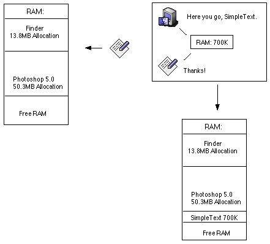

Optimizing Code (How to manage your RAM)
By Samad
"And yes, Bill Gates does sleep with his glasses on." (From Linux for Dummies)
Wife of Bill Gates: "Hey Bill, what are you doing on <http://store.apple.com>?", Bill: "I'm gonna buy an iMa... err, nothing."
Why should I even bother to optimize my code?
You want to satisfy your user. That's the point behind everything in programming - you want to satisfy your user. Without the user, who will use your program? Simplicity and speed satisfies the user. This guide will only focus on how to speed up your programs by properly managing your RAM.
Understanding Variables
Variables are the only main reason why RAM is there. When you launch an application, the OS will give the application a certain amount of RAM. This is called RAM allocation. Here is a small diagram to better illustrate the situation:

Now what exactly would SimpleText store in it's RAM allocation? It'll store temporary data, known as variables. The variables might contain the picture that the user might have opened, the location of the file that is opened, what type of computer it is for future reference, etc. However, variables are temporary. When we quit the program, all of its RAM allocation is lost and set aside into the Free RAM. When the next program opens, it'll take a certain chunk of the Free RAM. RAM itself is temporary, when you restart or shutdown the computer, all of the RAM's data is lost. With proper usage of variables, you could speed up your programs and save a little extra RAM for Grandma.
When & Where You Should Optimize Your Code
Always always always optimize when your done programming all your code. Optimization can cause confusion in your code and becomes very hard to optimize later after you find out that there is a bug that deletes the System Folder then deletes a REALbasic project that you have been working ever since Steve Wozniak made the Blue Box. AFTER you are done programming your code, optimizing can occur usually in Do, For, or While statements or anything that's repetitive. If your program doesn't have any repetitive statements then you really don't need to optimize your code. However, you could save RAM if your programs are not repetitive.
How To Optimize Your Code
Like I said before, you can mostly do your optimizing in repetitive statements. There are two things you can do in repetitive statements to make them faster:
You might be thinking, "What the heck?!?!". After reading this, it'll be more clear to you.
We could eliminate the AbPath variable altogether. We could just say:
Remember system of equations in Algebra? Well, think of it that way. Instead of saying:
x=y+1; x+y=10
We could just say:
y+1+y=10 (or 2y+1=10).
Summary
We should use less variables when:
So, using less variables results:
Using More Variables
Lets look back at the example that we used before:
If we examine the code, the programmer took out the variable TheName altogether. This will definitely cause the program to run slower. Why? Because the CPU has to recompute the statement "TheFolder.Name" over and over and over. "TheFolder.Name" does not have to be recomputed over and over. The answer will always be the same so it is useless to recompute it. Therefore, it is more proper to use a variable in this case. So all we have to do is set up a variable that will be computed only once and will be "TheFolder.Name". So the code could end up to be:
If we have the CPU compute the same statement over and over, it'll be just a waste. It's like saying:
We know that TheNum will come out to be 2. So we do not have to recompute it over and over.
Summary
We Should Use More Variables When:
Using More Variables Properly:
Preserving RAM
If we use less variables properly then we get more RAM for our programs to fiddle with and our programs will be much more efficent. Lets look at this code:
We could just say:
Like I said before, it's like the system of equations in Algebra. However, the code:
We should not try to preserve RAM. Why? Say if the user clicks "Cancel" when the GetOpenFolderItem dialog shows. That means TheFile will become Nil. If we try to do TheFile.OpenAsPicture when TheFile is Nil then the program will crash.
Here is another situation. Lets say if you are going to write an example for other programmers to use. Should the programmer use this code:
Or this code:
The programmer should use the first set of code. Since it is an example, other people are going to look at it. It wil be more confusing if programmers look at the second set of code rather than the first. In other words, it is okay to use more variables when you are writing examples.
Summary
When To Use Less Variables:
Do Not Use Less Variables:
Using Less Variables Results: